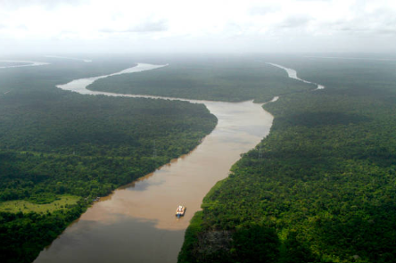
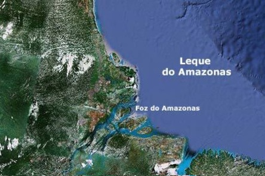
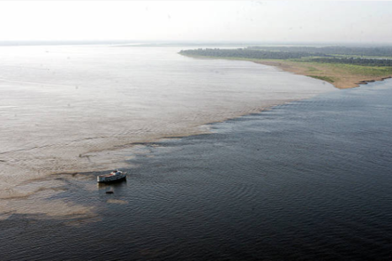
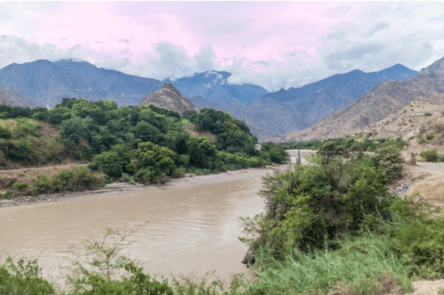
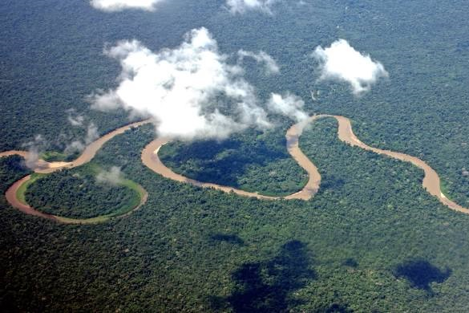
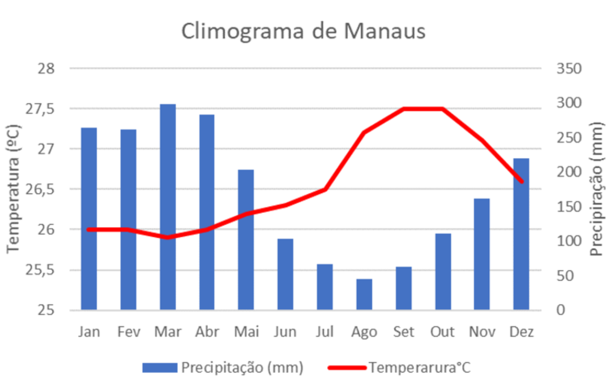
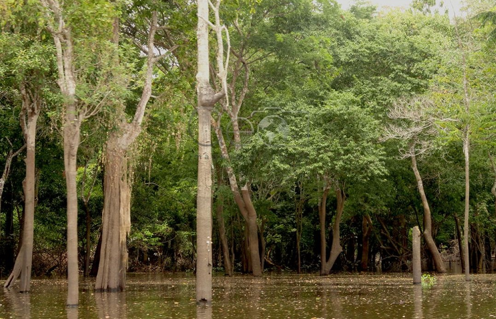

Sobre a Bacia Amazônica
Formação
Formada pelo rio Amazonas e seus afluentes situados nos dois hemisférios (norte e sul), o rio Amazonas nasce nos andes no Peru tendo 6.868km.




Relevo
O terreno em volta da Bacia Amazônica e plano, com terras baixas e amplas planices fluviais, seu sistema hidrico e complexo e muito diversificado tendo mais de 1000 afluentes.
Clima
Seu clima é o Equatorial (altas temperaturas e elevada umidade) com muita umidade no ar, bastante ocorrência de chuva.
Vegetação
Sua vegetação é do tipo Várzea, que são áreas com inundações frequentes, vegetação alta(20m).
